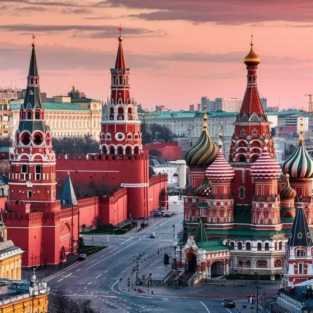
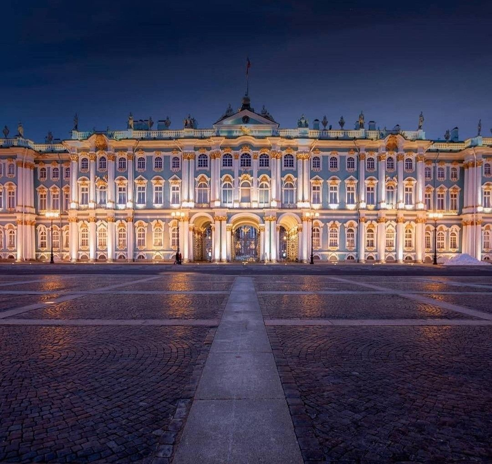
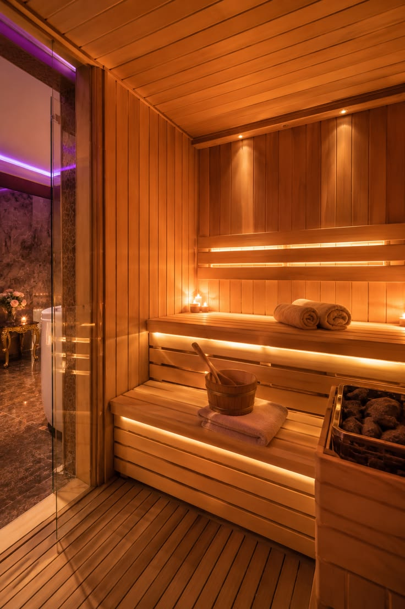
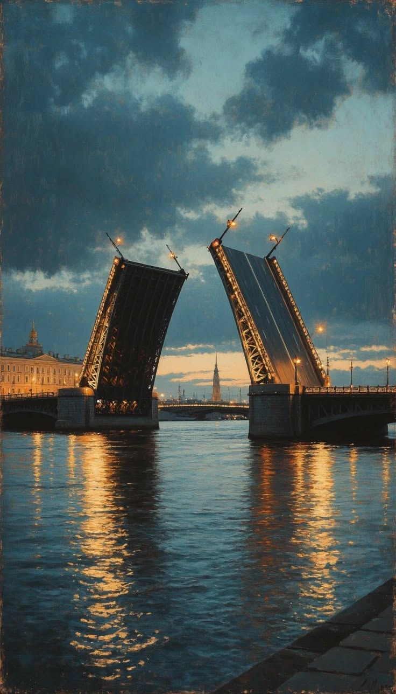
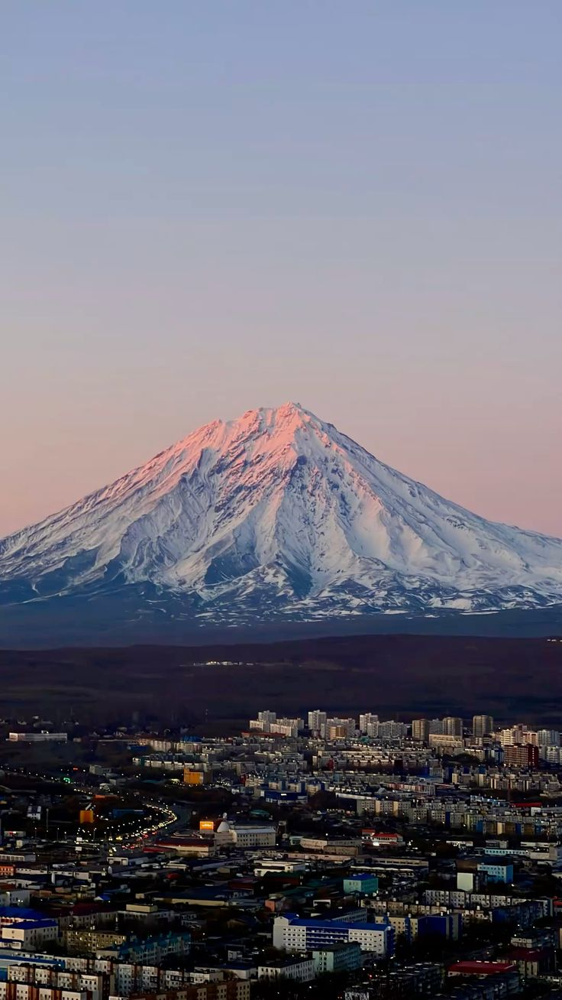
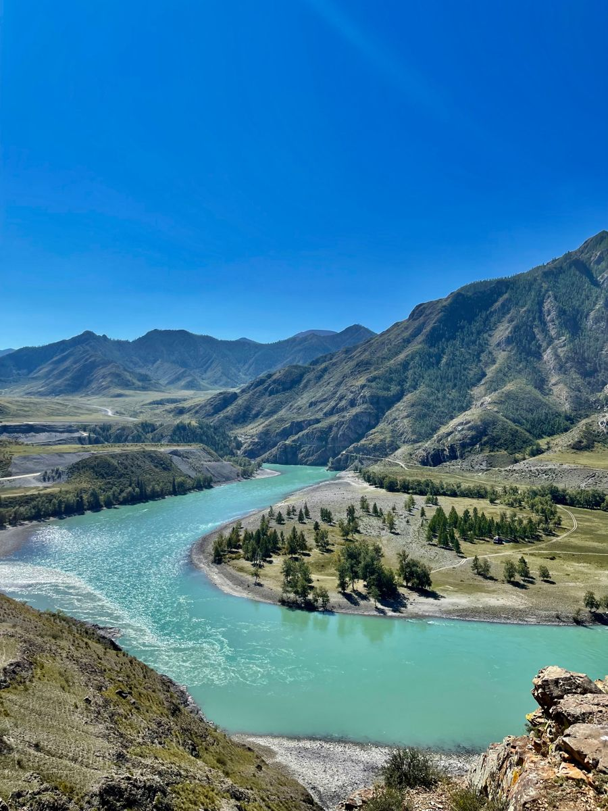
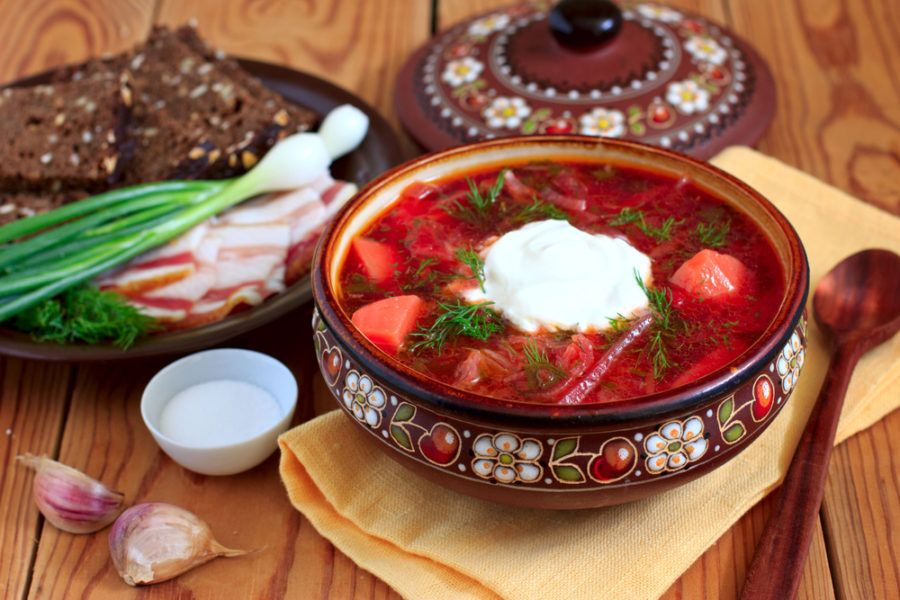
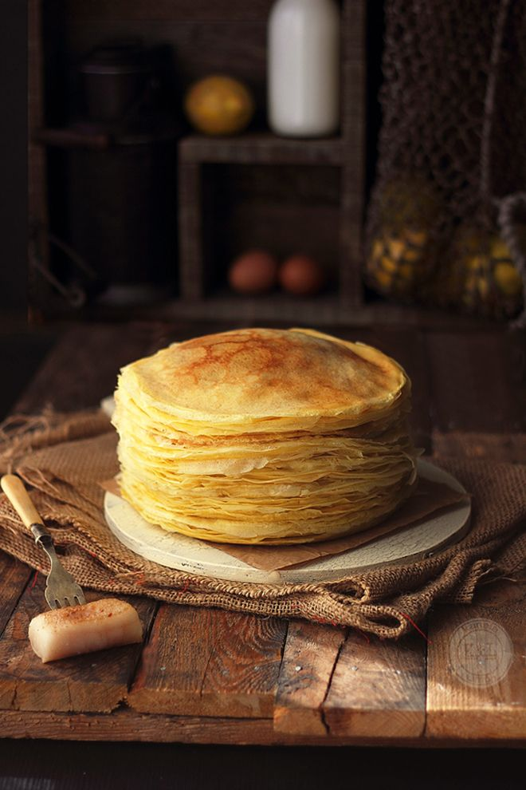
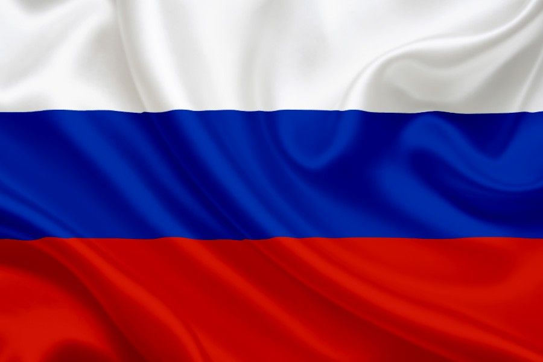
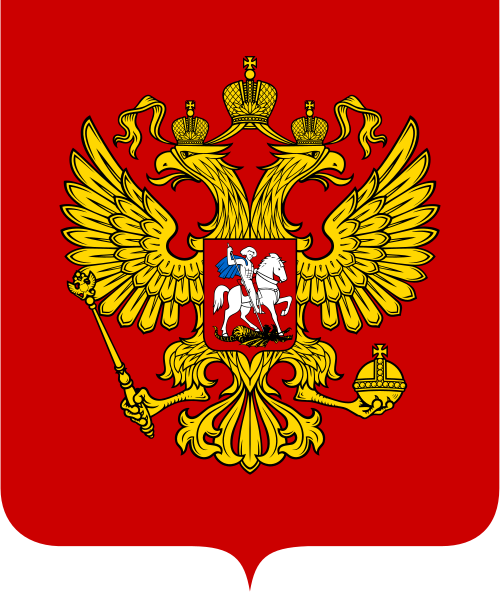

Россия
Самая большая страна на планете — от балтийского янтаря до тихоокеанских вулканов Камчатки, охватывающая одиннадцать часовых поясов и десятки народов внутри одной державы.
Россия растянулась через два континента — от Калининграда на Балтике до мыса Дежнёва в 80 километрах от Аляски. Здесь берёзовые леса средней полосы сменяются вечной мерзлотой тундры, а кавказские вершины — вулканами Камчатки. Откройте Россию и узнайте, чем страна с тысячелетней историей продолжает удивлять мир.
Россия на карте мира

Россия — Восточная Европа и Северная Азия, крупнейшая страна мира
Страна одиннадцати часов: Россия настолько велика, что когда на Камчатке встречают Новый год, в Калининграде ещё утро предыдущего дня — разница составляет 9 часов внутри одного государства.
С кем граничит Россия
У России больше сухопутных соседей, чем у любой другой страны мира. Вот некоторые из них:
Моря и океаны у берегов России
Наведи курсор на карточку, чтобы узнать больше о каждом побережье:
Северный Ледовитый океан
Омывает всё северное побережье страны — от Кольского полуострова до Чукотки
Тихий океан
Омывает восточное побережье — Камчатку, Сахалин и Приморье
Балтийское море
Выход на северо-западе, включая Калининградскую область
Чёрное море
Тёплое южное побережье у Кавказа и Крыма
Общие сведения
Площадь
17 125 191 км² (1-я в мире)
% водной поверхности
13 %
Население
~146 000 000 чел. (9-е)
Плотность
8,5 чел./км²
Столица
Москва
Форма правления
Федеративная президентско-парламентская республика
Официальный язык
Русский
Президент
Избирается на 6 лет
Названия жителей
Россияне
Валовой Внутренний Продукт
На душу населения
~15 000 долл.
Итого
~2,2 трлн
Валюта
российский рубль (RUB)
Телефонный код
+7
Часовой пояс
от UTC+2 до UTC+12
Интерактивная карта регионов
Наведите курсор на любую плитку карты — здесь появится административный центр региона и интересный факт о нём.
Один день в России
Представьте, что сегодня вы проснулись где-то в России. Как может выглядеть ваш идеальный день?

Доброе утро, Москва
Начните день с блинов и крепкого чёрного чая — традиционный русский завтрак, объединяющий поколения за одним столом.
📍 Москва
Сердце страны
Прогуляйтесь по Красной площади мимо стен Кремля и разноцветных куполов собора Василия Блаженного — главного символа России.
📍 Красная площадь, Москва
Вечер в Эрмитаже
Загляните в один из крупнейших музеев мира в Санкт-Петербурге — залы Зимнего дворца хранят более трёх миллионов экспонатов.
🎨 Санкт-Петербург
Вечер в бане
Завершите день в русской бане с берёзовым веником — древняя традиция, которая для многих остаётся ритуалом отдыха и общения.
📍 МоскваСамые красивые места
 Красная площадь
Красная площадь
Главная площадь страны с собором Василия Блаженного, Кремлём и мавзолеем — символ Москвы, известный во всём мире.

Санкт-ПетербургГород на воде, построенный Петром I: разводные мосты, белые ночи и один из красивейших музеев мира — Эрмитаж.
 Озеро Байкал
Озеро Байкал
Самое глубокое озеро планеты, хранящее пятую часть всей пресной воды Земли на поверхности.

КамчаткаПолуостров с более чем 160 вулканами, гейзерами и медведями, живущими в дикой природе.
 Золотое кольцо
Золотое кольцо
Маршрут по древним городам вроде Суздаля и Владимира с белокаменными храмами XII–XIII веков.

АлтайГорный край на стыке четырёх стран — бирюзовые реки, ледники и одна из самых чистых природных зон планеты.
Национальная кухня

Борщ
Наваристый суп со свёклой, капустой и мясом — блюдо, которое в каждой семье готовят по-своему. Подают со сметаной и чесночными пампушками.
Пельмени
Тесто с мясной начинкой, пришедшее с Урала и из Сибири — блюдо, которое традиционно лепили всей семьёй перед зимними холодами про запас.

Блины
Тонкие или пышные, с икрой или сгущёнкой — блины пекут круглый год, а на Масленицу они становятся главным символом проводов зимы.
Флаг и герб России
Символы, за которыми стоит своя история

Бело-сине-красный триколор — один из старейших государственных флагов Европы
Что означают цвета флага
Наведи курсор на каждую полосу, чтобы узнать её значение:
Белый
Символ мира, чистоты и благородства
Синий
Ассоциируется с верностью, честностью и постоянством
Красный
Символизирует державность, мужество и пролитую за Отечество кровь
Краткая история флага
- 1693Пётр I поднимает бело-сине-красный флаг на корабле «Орёл» — первое документальное упоминание триколора.
- 1705Указом Петра I триколор закрепляется как флаг торгового флота России.
- 1896При Николае II бело-сине-красный флаг официально утверждён государственным.
- 1991После распада СССР триколор возвращён в качестве государственного флага Российской Федерации.
Герб России — что зашифровано в символах


Парад 9 Мая на Красной площади — одна из главных ежегодных традиций страны.
Государственные праздники
Главный праздник страны — 9 мая, День Победы. Отмечается в честь окончания Великой Отечественной войны в 1945 году. По всей стране проходят парады, шествия и салюты.
Новый год
Главный семейный праздник зимы, отмечаемый с 31 декабря на 1 января
Рождество Христово
Отмечается по юлианскому календарю, на 13 дней позже западного Рождества
День защитника Отечества
Праздник, посвящённый мужчинам и военной службе
Международный женский день
Один из самых любимых праздников года, отмечается цветами и застольями
Праздник Весны и Труда
Исторически связан с международным днём солидарности трудящихся
День Победы
Главный государственный праздник — годовщина победы в Великой Отечественной войне
День России
Отмечается в честь принятия Декларации о государственном суверенитете в 1990 году
День народного единства
Установлен в память об освобождении Москвы от польско-литовских интервентов в 1612 году